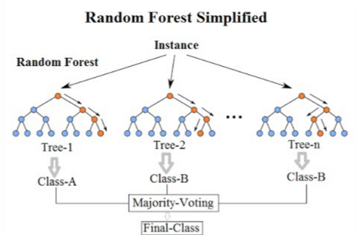
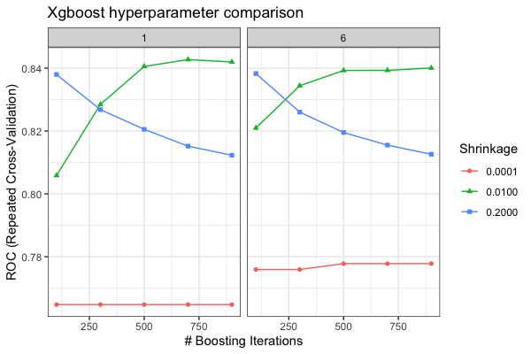
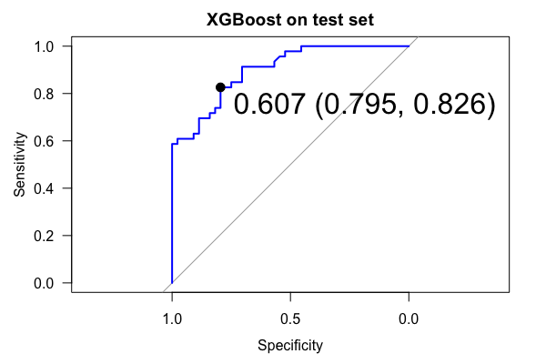
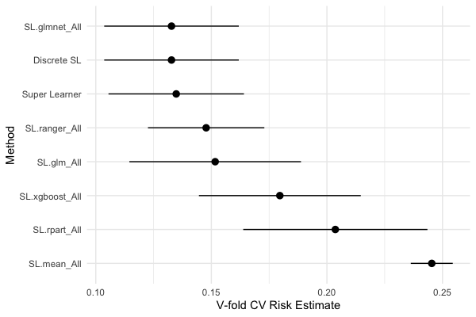
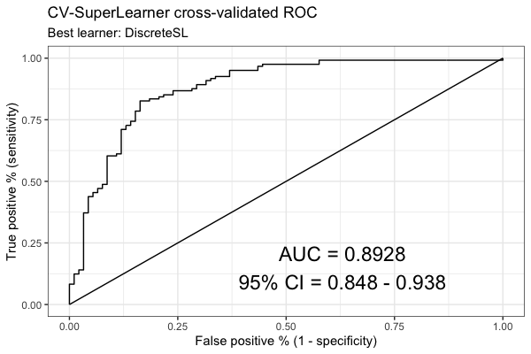

2025-09-23
Click here to download the Introduction to Machine Learning in R workshop materials
Or (advanced):
git clone [URL] in the Terminal in the folder you want it to live in.This workshop will utilize a variety of packages to install and organize the code, fit the machine learning algorithms, visualize their outputs, and evaluate their performances.
Run renv::restore() to install these.
Algorithms: “ranger”, “rpart”, “xgboost”
Visualization: “ggplot2”, “rpart.plot”, “vip”
Machine learning frameworks: “caret”, “SuperLearner”
R utility packages: “remotes”, “magrittr”, “dplyr”
Miscellaneous: “pROC”, “rio”
Machine learning evolved from scientific pursuits in statistics, computer science, information theory, artificial intelligence, and pattern recognition.
How to define machine learning?
1) Generally: algorithms, computers, and other machines that can “learn” without direct input from a human programmer.
2) Practically: sets of tools for investigating/modeling/understanding data.
3) Specifically: (see below)
The importance of statistics:
- Welling’s commentary
- Srivastava’s discussion
- Breiman’s take
Seek “actionable insight”:
- Actionable insight
Selecting a machine learning algorithm depends on the characteristics of the problem being investigated - there is no “best” method applicable to all cases. Machine learning is generally divided into three broad classes of learning: supervised, unsupervised, and reinforcement.
We will focus on supervised learning and will begin with Ordinary Least Squares (OLS) and Lasso regression, followed by tree-based and ensemble classification methods.
The syntax for supervised machine learning algorithms can be thought of like this:
\(y\) ~ \(x_{1}\) + \(x_{2}\) + \(x_{3}\)… \(x_{n}\)
\(y\) is the dependent/response/target/outcome variable
\(x\) are the independent/input/predictor/feature/covariate variables
Supervised machine learning methods learn a target function \(f\) that best maps \(x\) to \(y\) based on a set of training data.
Our function would look like this: \(y = f(x) + \epsilon\) where \(f\) is some function that relates our \(x\) predictor variables to \(y\) in an unknown way thus we must estimate it. Epsilon \(\epsilon\) is the random error, is independent of \(x\) and averages to zero. Therefore, we can predict \(y\) using \(\hat{y} = \hat{f}(x)\) for new data (the test dataset) and evaluate how well the algorithm learned the target function when introduced to new data.
How to define machine learning, specifically? (revisited)
More specifically, we can think of machine learning as a bunch of methods to estimate \(f\)!
Classification is used when the \(y\) outcome variable is categorical/discrete. Binary examples generally refer to a yes/no situation where a 1 is prediction of the “yes” category and 0 as the “no”. Classification models the probability that the outcome variable is 1 based on the covariates: \(Pr(y = 1 | x)\). This can be extended to multi-level classification as well.
Regression is used when the target \(y\) outcome variable is continuous. Regression models the conditional expectation (conditional mean) of the outcome variable given the covariates: \(E(y | x)\).
A longstanding first step is to split a dataset into “training” and “test” subsets. A training sample usually consists of a majority of the original dataset so that an algorithm can learn the model. The remaining portion of the dataset is designated to the test sample to evaluate model performance on data the model has not yet seen. Clean, subset, and handle missing data if necessary before the splitting process commences.
Performance metrics are used to see how well a model predicts a specified outcome on training and test datasets.
A model that performs poorly on the training dataset is underfit because it is not able to discern relationships between the \(x\) and \(y\) variables.
A model that performs well on the training dataset but poorly on the test dataset is said to be overfit because the model performed worse than expected when given new data. To some extent the patterns found in the training data may have been random noise and therefore, by random chance, are different in the test data.
Common performance metrics: Accuracy, Mean squared error, Sensitivity and specificity, Area under the ROC curve (AUC)
A first task will be to prep the data. We don’t have time to focus on this, so we just need to “Preview” the 00-clean-dataset.Qmd notebook.
Decision trees are a standard alternative to linear regression and make no assumptions about the data; they split the data into smaller and smaller subgroups of \(x\) covariates in terms of \(y\) and split on each predictor. How does it work?
A decision tree predicts that an observation belongs to its correct class.
For basic classification, we are no longer using MSE or RMSE but instead classification error rate.
To determine the top split (“root node”), the model looks at all cutpoints to see which group stands out as the best split. The “complexity parameter” can be used to prune the tree to a lesser number of splits and removes unnecessary information.
Breiman et al’s book Classification and Regression Trees (1984) is a must read for learning more about decision trees.
Decision Tree
The random forest algorithm seeks to improve on the performance of a single decision tree by taking the average of many trees. Thus, a random forest can be viewed as an ensemble method, or model averaging approach.
Random forests are - random because each tree is a bagged sample and because only a subset of all predictors (the mtry hyperparameter) are used as candidates at each split (not all predictors like single decision trees) - This reduced number of predictor candidates at each split allows for something other than the best split to be the top split, thus growing many different looking trees - this “decorrelates” the trees.
- forests because many trees are grown!
Leo Breiman also wrote the seminal paper on random forests:
Breiman L. 2001. Random forests. Machine learning 45:5–32

Boosting takes this ensemble idea a step further! The XGBoost algorithm takes a bunch of weak trees and “boosts” them into strong trees. This algorithm downweights cases it can easily predict but upweights the cases it has trouble predicting.
This is not teleological though, as boosting fits a forest of trees sequentially on the residual of the previous tree. This learning rate can be specified, or how fast each tree should learn the error of the previous tree. Here we also introduce:
- caret::trainControl for defining cross-validation (rather than bootstrap) settings
- caret::expand.grid for creating a grid search of hyperparameters to tune, allowing us to fit multiple combinations of the algoritihm simultaneously. - Area Under the Receiver Operating Characteristic Curve (AUC) as a performance metric.


The SuperLearner R package takes this idea of ensembling even further! Instead of ensembling only trees-based methods, we can simultaneously compare the cross-validated performance of multiple algorithms and/or a single algorithm with differently tuned hyperparameters. This is a generally advisable approach to machine learning instead of fitting single algorithms.
Let’s compare the algorithms you have previously fitted individually in this workshop: lasso, decision tree, random forest, and xgboost. We will add two other algorithms for fun: logistic regression and the mean of our Y response variable.
glm); one of the most common algorithms across scientific disciplines.

Thanks!